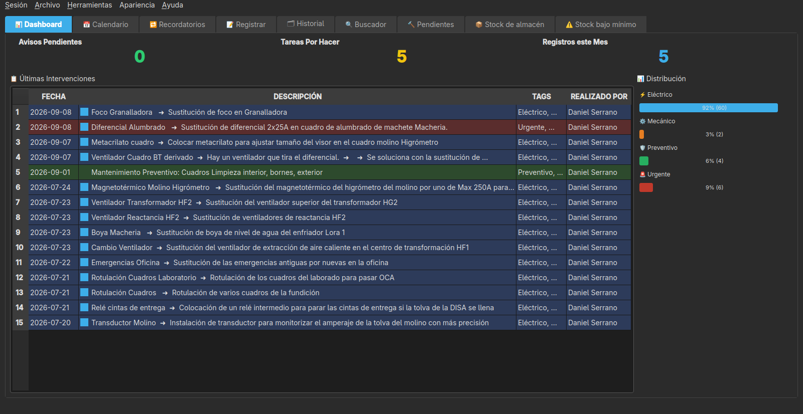
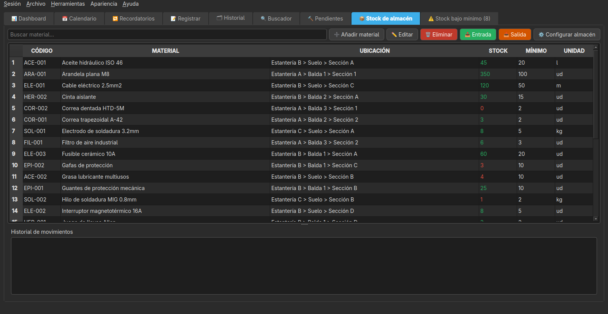
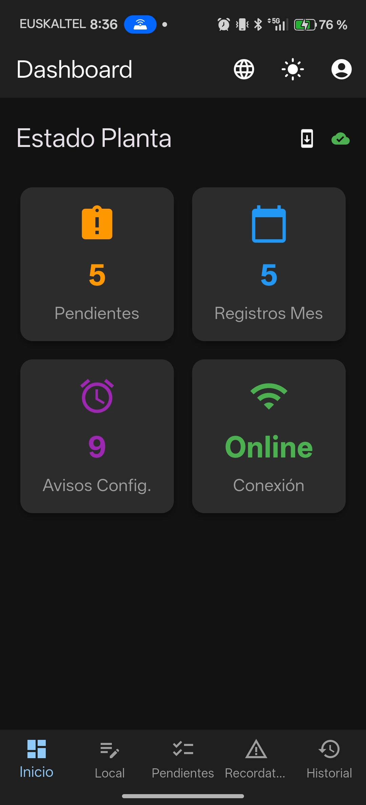
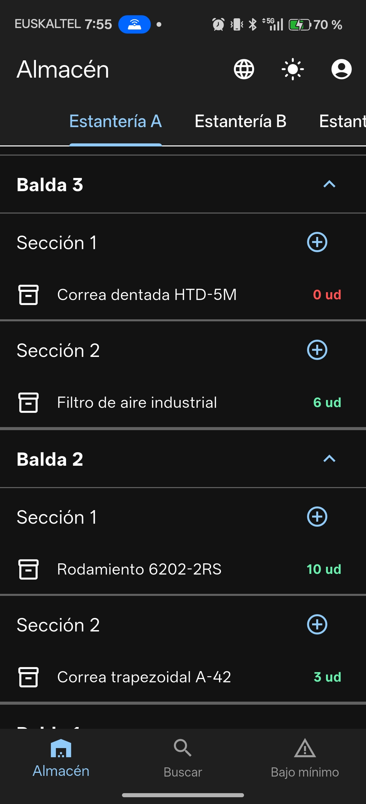
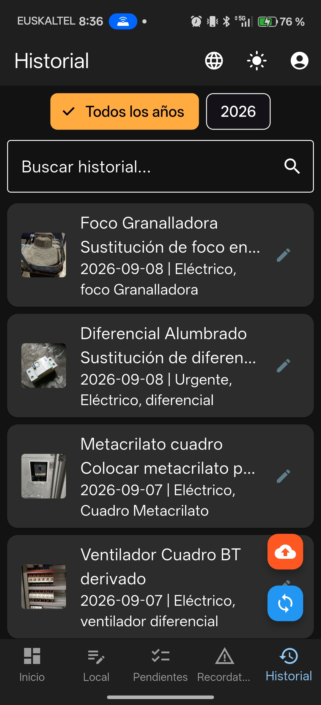

MantPro
MantPro es un GMAO/CMMS (sistema de gestión de mantenimiento) gratuito y de código abierto para gestionar el mantenimiento preventivo y correctivo de una planta, taller o flota, con aplicación de escritorio y app móvil, desarrollado por AnabasaSoft.
Características
Aplicación de Escritorio (PC)
Es el centro de control del sistema: desde el PC se gestionan usuarios, máquinas, historial de intervenciones, stock de almacén e informes, y se sincroniza con las apps móviles.
- Dashboard con KPIs: Avisos pendientes, tareas por hacer, registros del mes, MTBF y MTTR de toda la planta, y gráficos de máquinas con más trabajos y de averías por mes.
- Estadísticas por Técnico: Trabajos de cada técnico por año y mes, averías, preventivos, horas de parada y pendientes asignados, con filtro por tipo y exportación a PDF y Excel.
- Gestión de Usuarios y Roles: Login con usuario y contraseña, roles de administrador, técnico y almacén (combinables), alta/baja y restablecimiento de contraseñas.
- Autoría y Auditoría: Cada intervención guarda quién la realizó, y un registro de cambios deja constancia de quién edita o borra cada trabajo.
- Permisos por Registro: Un técnico solo edita o borra sus propios trabajos; un administrador puede gestionar y reasignar cualquier registro.
- Sesiones de Dispositivos: Lista los móviles vinculados a cada usuario, indica si están en línea ahora mismo y permite revocar sesiones concretas.
- Calendario Interactivo: Visualiza y gestiona tareas de mantenimiento con códigos de color, festivos oficiales según el país o la región, vacaciones y puentes.
- Historial Completo: Todas las intervenciones con fotos de antes y después y una colección de fotos adicional por trabajo.
- Tareas Pendientes: Con prioridad (de baja a crítica), asignación a un técnico concreto, fotos y opción de revertir un trabajo completado por error.
- Avisos Recurrentes: Mantenimientos que se repiten solos y que, si se pasan de fecha, se quedan pendientes o atrasados hasta que se hacen.
- Control de Maquinaria: Árbol de máquinas y submáquinas con zona y foto, contador de trabajos por año y mes, e indicadores de fiabilidad por máquina.
- Repuestos por Máquina: Qué artículos del almacén lleva cada máquina y cuántos, con su stock y ubicación, y en qué máquinas se usa cada artículo.
- Etiquetas QR por Máquina: PDF de etiquetas para pegar en las máquinas; al escanearlas con la app MantPro se abre la ficha de la máquina.
- Control de Stock de Almacén: Zonas, estanterías, baldas y secciones configurables, fichas de materiales con foto, historial de movimientos de todo el almacén y alertas de stock bajo mínimo.
- Aviso de Repetidos: Avisa al dar de alta una máquina o un artículo si ya existe otro con el mismo código o un nombre muy parecido.
- Informes en PDF, CSV y Excel: Historial con logo personalizable, filtro por técnico y colección de fotos; exportación del stock completo o por zona o estantería.
- Importar desde Excel/CSV: Máquinas, artículos, avisos y usuarios, con plantilla, vista previa y copia de seguridad previa.
- Sistema de Búsqueda: Búsqueda avanzada por fechas, etiquetas y contenido.
- Copias de Seguridad: Backup automático incremental al cerrar la app y backup manual completo, con restauración con barra de progreso.
- Sincronización Móvil: Servidor integrado (arranca solo) para sincronizar con las apps móviles vía QR, sin necesidad de internet.
- Instalar las Apps con un QR: El PC muestra un QR que, escaneado con la cámara del móvil, descarga la última versión de MantPro o MantPro Stock.
- Ayuda Integrada: Manual completo con índice y buscador; con F1 se abre en el apartado de la pestaña en la que estás.
- Siete Idiomas y Tres Temas: Español, inglés, euskera, catalán, gallego, portugués y francés; modo oscuro, claro o clásico estilo Windows 98.
Aplicación Móvil MantPro (Android)
Pensada para el técnico sobre el terreno: permite registrar intervenciones al momento, con fotos y notas, y sincronizarlas con el PC en cuanto hay conexión.
- Acceso con Usuario: Cada técnico inicia sesión una vez y la sesión queda guardada en el dispositivo.
- Registro Rápido: Captura de intervenciones sobre el terreno, firmadas automáticamente con su usuario.
- Fotos y Anotaciones: Fotos de antes y después, colección de fotos adicional y editor para dibujar sobre ellas y marcar zonas.
- Escanear la Máquina: Lee la etiqueta QR de una máquina y abre su ficha sin conexión: sus últimos trabajos, sus repuestos con el stock del almacén y un botón para registrar un trabajo en ella.
- Trabajos Pendientes: Visualiza y gestiona las tareas asignadas desde el PC, con filtro "Solo míos".
- Material Usado: Añade a un trabajo el material de almacén empleado, descontándolo automáticamente del stock.
- Vincular Máquina: Selecciona la máquina o submáquina en la que se ha hecho el trabajo.
- Etiquetas Rápidas: Sistema rápido de etiquetado con casillas de verificación.
- 100 % Offline: Todo funciona sin conexión y se envía solo al PC en cuanto vuelve a estar accesible.
- Conectada en Segundo Plano: Sigue sincronizando mientras está abierta, aunque uses otra app, con una notificación; al cerrarla del todo deja de gastar batería.
- Primera Sincronización con Progreso: Barra de progreso y descarga en paralelo de datos y fotos.
- Actualizar desde la App: Cuando hay una versión nueva, la descarga e instala desde el propio aviso, sin pasar por GitHub.
- Recordatorios Diarios: Notificación a las 8:00 si hay trabajos pendientes sin completar.
Aplicación Móvil MantPro Stock (Android)
Aplicación independiente para consultar y mover el stock de almacén desde el móvil sin necesidad de la app de trabajos.
- Navegación del Almacén: Árbol de estanterías, baldas y secciones, igual que en el PC.
- Búsqueda de Materiales: Por nombre, código, descripción o ubicación.
- Entradas, Salidas y Traslados: Registra movimientos de stock con motivo opcional.
- Se Usa En: Cada artículo indica en qué máquinas se usa como repuesto y cuántos lleva cada una.
- Aviso de Repetidos: Avisa al dar de alta un artículo si ya existe otro con el mismo código o un nombre muy parecido.
- Aviso Visual de Stock: Cantidad resaltada en rojo o verde según el mínimo configurado.
- 100 % Offline: Altas, ediciones, entradas y salidas sin conexión, que se envían solas al PC en cuanto vuelve a estar accesible.
- Conectada en Segundo Plano: Sigue sincronizando aunque uses otra app; el icono de usuario se pone verde con conexión y rojo sin ella.
- Actualizar desde la App: Descarga e instala la nueva versión desde el propio aviso.
- Recordatorio Diario: Notificación para comprobar la cantidad real de varios materiales al azar.
Cómo Funciona
Cada técnico registra sus intervenciones desde el móvil, en el momento y con fotos de antes y después si hace falta. Todo se sincroniza automáticamente con la aplicación de escritorio, donde queda ordenado por máquina, fecha y persona, listo para consultarlo o generar un informe en PDF. La sincronización usa un código QR para vincular el móvil con el PC y funciona sin necesidad de internet, dentro de la misma red WiFi.
Los paquetes .deb y .rpm están firmados con la clave GPG de AnabasaSoft: comprueba aquí su huella antes de instalarlos.
Vídeo de Demostración
Capturas de Pantalla





← Volver a Aplicaciones